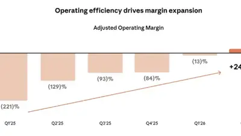

Ken Tremendous
@kentremendous.bsky.social
· 10/26 12:08· 命中「Gemini」
Hey Gemini what is my kid's name and what does she look like, I'm at her school play and I can't figure out which one it is
 娛樂2026.10.25
娛樂2026.10.25
 時事2026.10.24
時事2026.10.24
 生活2026.10.24
生活2026.10.24
 時事2026.10.23
時事2026.10.23
Social Lab（OpView 社群口碑資料庫）每週彙整各平台熱門事件。榜上的數據以圖表呈現， 這裡列出每週彙整的標題與觀測期間，點進去看完整排行。
 PTT
PTT
 Facebook
Facebook
 Dcard
Dcard
 Instagram
Instagram
 Mobile01
Mobile01
 新聞
新聞
 Facebook 意見領袖
Facebook 意見領袖
 Instagram 意見領袖
Instagram 意見領袖
 YouTube 意見領袖
YouTube 意見領袖
Social Lab 依社群聲量統計的各平台人氣意見領袖前三名。
Bluesky 的全站熱門話題，以英語圈的娛樂、體育、政治為主，僅供參考。
以 30 小時內、依讚數與轉發數排序，已過濾掉 AI 繪圖標籤與明顯洗版內容。
Hey Gemini what is my kid's name and what does she look like, I'm at her school play and I can't figure out which one it is
The owners of Elvis Presley’s music sued Anthropic, saying it trained its AI models on more than 200 of Presley’s songs without permission, accusing it of copyright infringement. www.nytimes.com/2026/10/25/a...
It's weird seeing AI bubbles across the world begin to collapse in real-time because AI continually needs more input to function, every time it's used its trained and becomes shittier, but nobody's writing their own code now, so it's a death spiral for everyone who needs claude to work
I’m sick of headlines treating these forays as something done independently. No. Anthropic created it. Anthropic did this. And they should be held to account, not some supposedly autonomous AI www.reuters.com/world/us/ant...
Huh wonder why Anthropic decided to do that
*ANTHROPIC FILES PUBLICLY FOR US IPO www.sec.gov/Archives/edg...
* ANTHROPIC: CONCERNS RAISED THAT ADVANCED AI SYSTEMS COULD POSE CATASTROPHIC OR EXISTENTIAL RISKS TO HUMANITY WITHOUT APPROPRIATE OVERSIGHT @reuters.com $ANT
I had my AI agent create an app called “Lunch” to help me with decision fatigue and boost my productivity. It has a few pictures of things I might like to eat. Tapping one spawns a subagent to order that item on Uber Eats and 60-90 minutes later I’m eating. It’s 600 thousand lines of JavaScript.
In my opinion, it’s completely beside the point because people who need this warning will use all sorts of models, free and paid—but because the LLM apologists are screaming, this is OpenAI’s latest subscription model, Astra 6, prompted to fetch and plot the original data.
seems Anthropic has figured out how to make money
Anthropic’s Claude AI model accessed Georgia voter data in US
19% adjusted operating margin, holy smokes

Claude Ai is out there committing election related crimes and no one gives a shit. www.reuters.com/world/us/ant...
I opened the Anthropic prospectus and it’s just the number 4
Two AI Chipmakers Make Up 34% of America’s Earnings Boom www.wsj.com/finance/stoc...